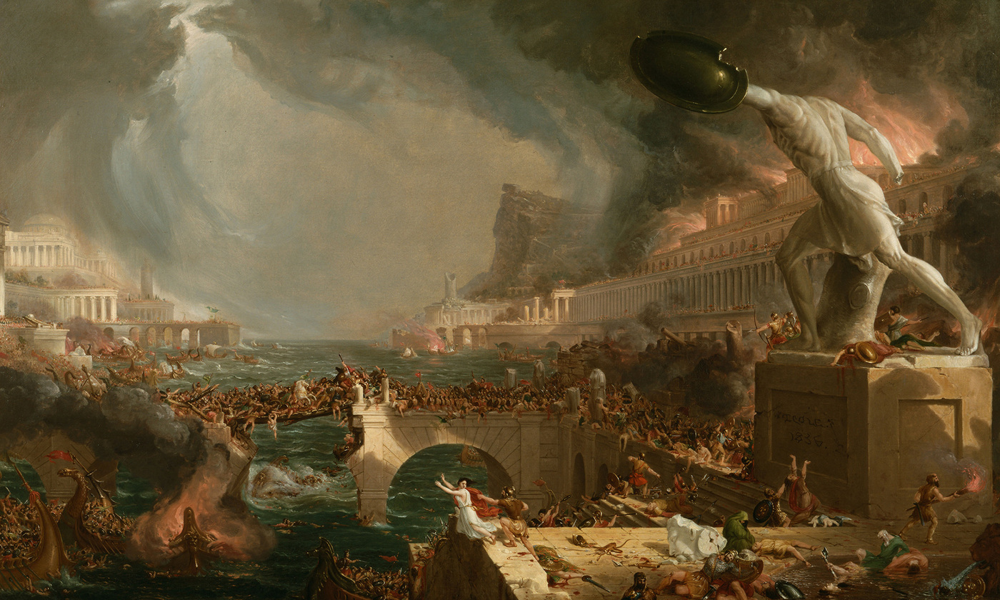

Resumo

Esse trabalho foi realizado como parte do componente avaliativo da grade currícular da matéria de História do curso Técnico de Informática integrado ao Ensino Médio no Instituto Federal de São Paulo.
O grupo ficou encarregado de fazer um trabalho que comtemplasse as questões envoltas do cotidiano dos pobres na Roma Antiga. Para tornar o trabalho mais rico e profundo, o grupo optou por dividir o tema em tópicos, que nos ajudariam a melhor compreender a sociedade romana e entender as condições das classes menos favorecidas na Roma antiga.